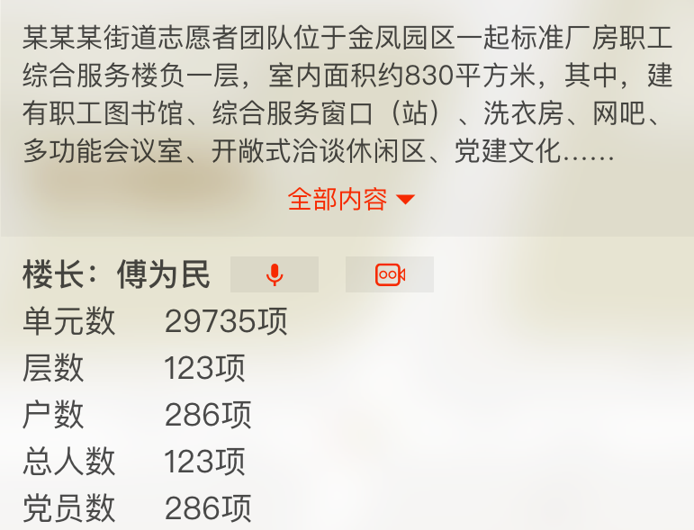

当前区域
山东省-枣庄市
图表模式
地图模式
实时监控
退出
某某某网格
某某某大厦

党支部
全部
党支部
党群服务中心
志愿团队
志愿活动
微心愿
先锋网格
党建活动
困难帮扶
第一书记
经济薄弱村
全部
农村
机关
高校
社区
两新
国有企业
非公
xxx街道
中国共产党滕州市北辛街道工作委员会
中国共产党滕州市荆河街道工作委员会
中国共产党滕州市龙泉街道工作委员会
中国共产党滕州市善南街道工作委员会
中国共产党滕州经济开发区工作委员会
中国共产党滕州市荆河街道工作委员会
中国共产党滕州市北辛街道工作委员会
中国共产党滕州市荆河街道工作委员会
中国共产党滕州市北辛街道工作委员会
中国共产党滕州市荆河街道工作委员会
中国共产党滕州市北辛街道工作委员会
中国共产党滕州市荆河街道工作委员会